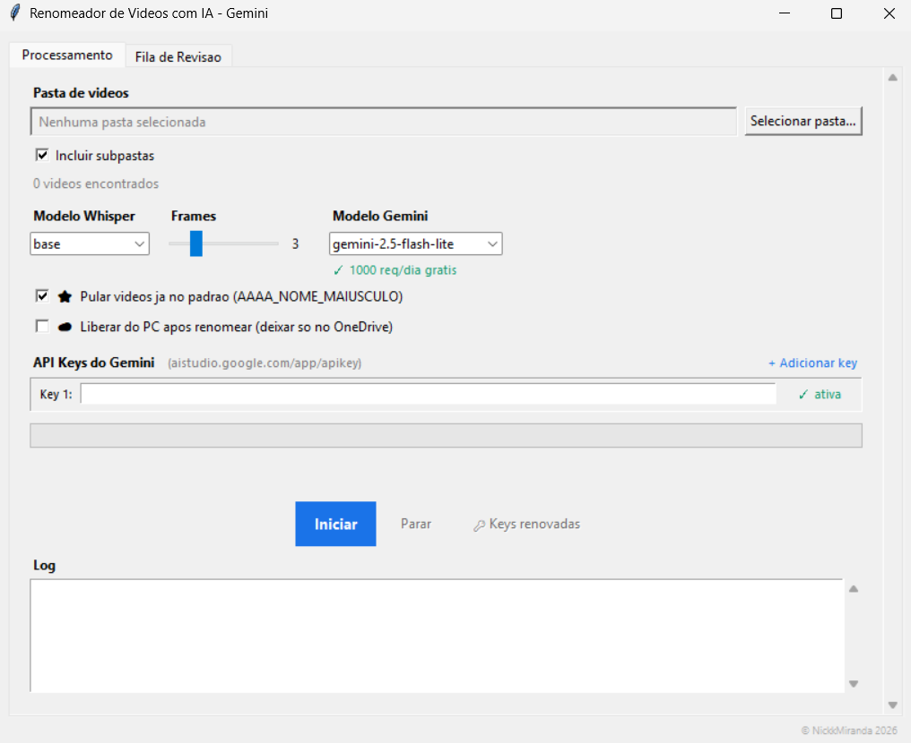

170videos standardized in one batch
5 hper batch, versus 2+ days by hand
28-57videos per hour in the real batch
Stack
- Python
- Tkinter
- FFmpeg
- Whisper
- Gemini API
- Claude API
- OpenStreetMap
In use at MUPAN
Video pipeline in Python: from 2+ days to 5 hours.
MUPAN had a naming convention for its institutional videos, but applying it by hand to a large archive took days. I designed a Python desktop app that reads each video, gathers clues about date, place and content, and proposes a standardized name for a person to approve.
Simulation based on the system's real flow. The data shown is fictional.
- Date & place
- Audio
- Frames
- AI
- Review
Decisions I made
- Human review was the bottleneck, not the AI. So processing and review run in parallel: while someone checks one name, the next videos are already being analyzed.
- One provider failing doesn't stop the batch. The app rotates across several API keys when one hits its quota, falls back from Gemini to Claude if one fails, and retries with increasing wait times.
- AI is one component, not the system. Before calling it, the app pulls the date from three sources (metadata, file and path), turns the video's GPS into a place name and transcribes the audio. The model gets that context ready-made.
- Care with the originals. Files with accented names are processed from temporary copies, free disk space is checked before starting, and videos already in the standard are skipped.
